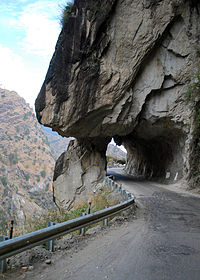

Bilaspur
Bilaspur is a district of Himachal Pradesh state, India. It contains the manmade Govind Sagar Lake on, the Sutlej River which acts as the reservoir for the Bhakra and Nangal Dam project. The road bridge on this lake at Kandraur is highest of its kind in Asia(second highest bridge). Its headquarters are in the town of Bilaspur.
.
Chamba
Chamba is the northwestern district of Himachal Pradesh, in India, with its headquarters in Chamba town. The towns of Dalhousie and Khajjhiar are popular hill stations and vacation spots for the people from the plains of northern India. Chamba is the only district in northern India to preserve a well-documented history from c. 500 AD.
Hamirpur

Hamirpur district is one of the twelve districts of the state of Himachal Pradesh, India. The headquarters of the district is in the Hamirpur town. The district occupies an area of 1,118 square kilometres or 432 square miles.
It is the smallest district of Himachal Pradesh.
Kangra
Kangra is the most populous district of the Indian state of Himachal Pradesh, India.It is home of Masroor Rock Cut Temple, also known as Himalayan Pyramids and wonder of the world for being likely contender for the UNESCO World Heritage Site.
Kinnaur
Kinnaur also district in the Indian state of Himachal Pradesh, India. The district is divided into three administrative areas – Pooh, Kalpa, and Nichar and has five tehsils (counties).
The administrative headquarters of Kinnaur district is at Reckong Peo.
.
Kullu

Kullu is a district in Himachal Pradesh, India. The largest valley in the district is called the Kullu Valley, which is also known as the Valley of the Gods. There is also a town called Kullu which sits on the banks of the Beas River in the central part of the valley.
Lahaul and Spiti
The district of Lahaul-Spiti in the Indian state of Himachal Pradesh consists of the two formerly separate districts of Lahaul and Spiti. The present administrative centre is Keylong in Lahaul. Before the two districts were merged, Kardang was the capital of Lahaul, and Dhankar the capital of Spiti. The district was formed in 1960.
.
Mandi
Mandi district is one of the central districts of Himachal Pradesh state in northern India. Mandi town is the headquarters of Mandi district. The town has mythological and historical significance and boasts of a unique temple architecture. It is referred to as Chhota Kashi as there are many ancient temples in the city and on the banks of river Beas.
Shimla
Shimla district of Himachal Pradesh also known as Queen of Hills. It is surrounded by Mandi and Kullu in the north, Kinnaur in the east, Uttarakhand in the southeast, Solan to the southwest and Sirmaur in the south.
Sirmaur
Sirmaur is the most south-eastern district of Himachal Pradesh, India. It is largely mountainous and rural, with 90% of its population living in villages. It includes the towns of Nahan (its capital), as well as the Shivalik Fossil Park at Suketi, where fossils over 85 million years old have been found.
Solan
Solan district is one of the twelve districts of Himachal Pradesh state in northern India. Solan town is the administrative headquarters of the district. The district occupies an area of 1936 km².
Una
Una is one of the districts of Himachal Pradesh, India, an shares its border with the Hoshiarpur District and Rupnagar district of Punjab. The terrain is generally a plain with low hills.